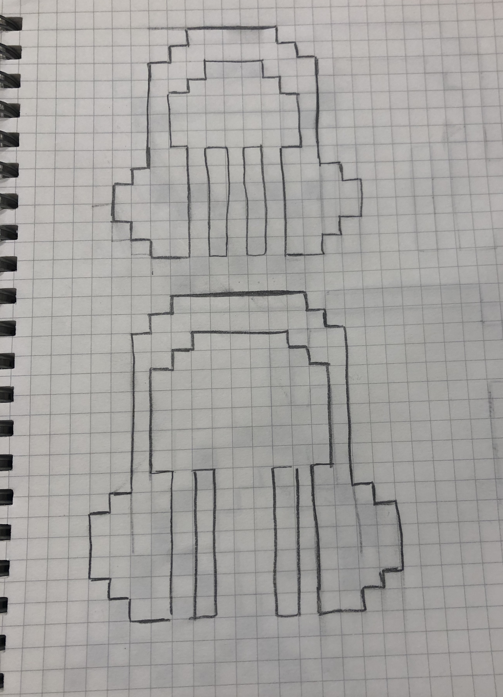
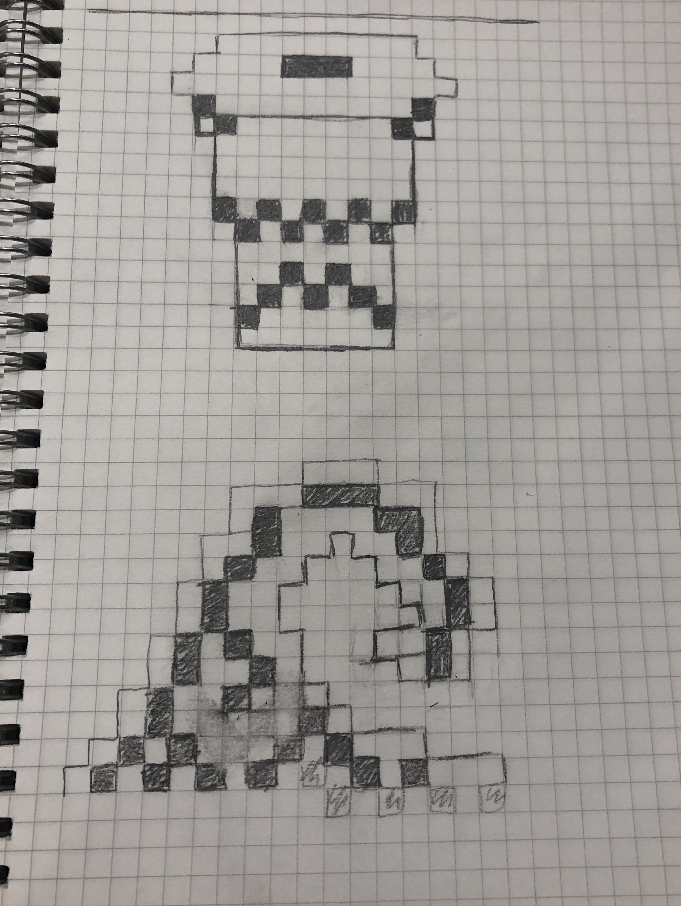
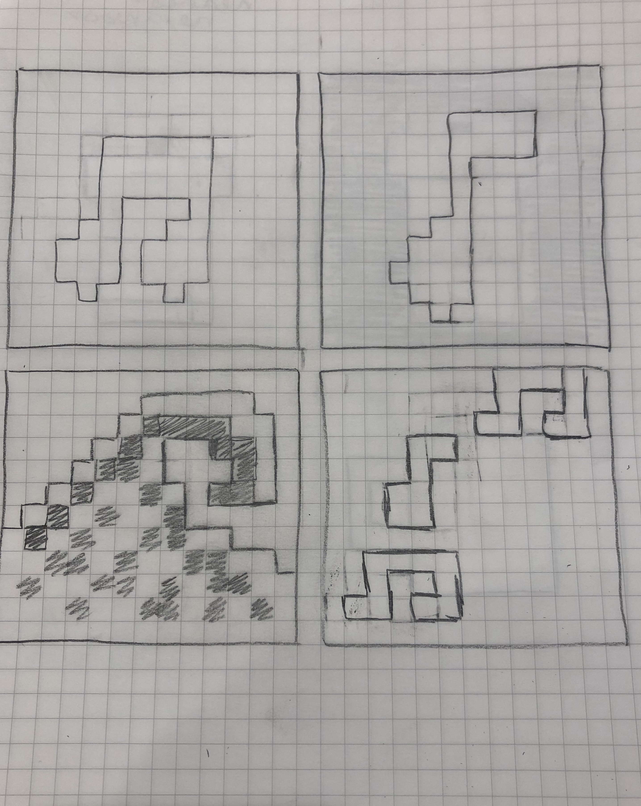
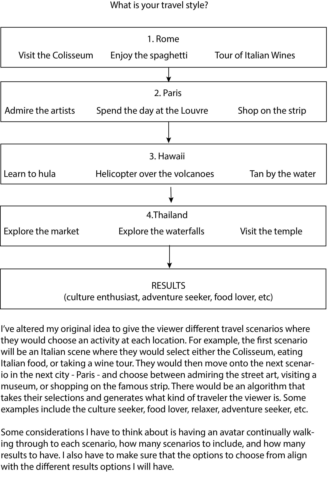
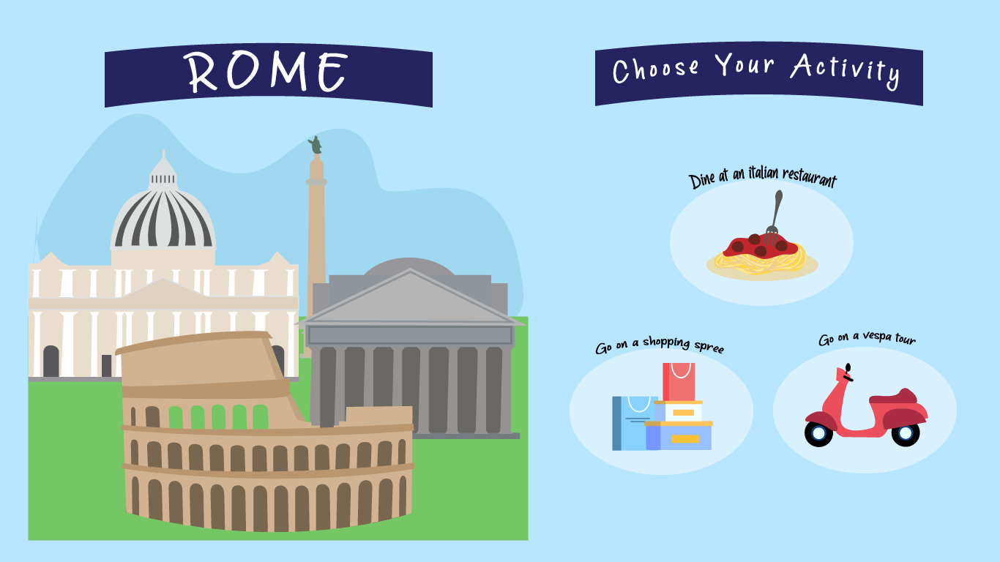
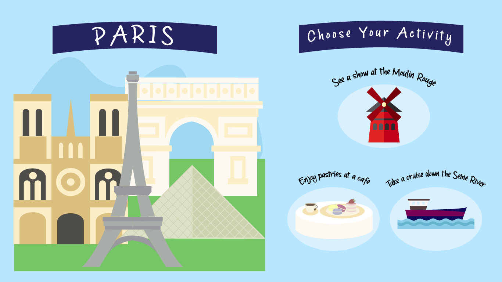
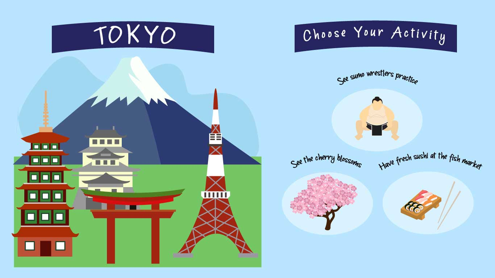
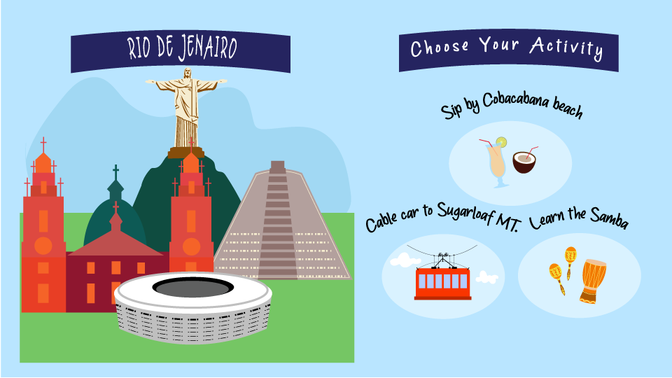

ARTS 412
Software Design II

Erica Vissichelli
As a student studying marketing, business analytics, and graphic design, I love working as a team to find creative solutions to strategically problem-solve. I am very interested in brand strategy, digital media, and event planning, especially in the entertainment and consumer goods industries. My experience with case competitions, as a campus tour guide, and as a brand ambassador for The Coca-Cola Company has helped me develop skills to create visuals, communicate effectively, and plan strategically, among others. I am motivated, enthusiastic, and love to be challenged.
Project 1: Riddle Me This - Tangled
We were tasked with developing a typographic riddle that relates to popular movies. This represents the family movie, Tangled. The design was created in Adobe Illustrator and is made to look as if the typographic elements are literally tangled together.
Project 1: Riddle Me This - Little Manhattan
We were tasked with developing a typographic riddle that relates to popular movies. This represents the movie, Little Manhattan. The design was created in Adobe Illustrator and is made to look as if the different NYC locations create the city skyline.

Project 1: Class Riddle Book
Click on the image to view the full class book!
Project 2: Bitmap Icon Design Sketches



Our project asks us to sketch an icon that fits in with the early Macintosh interface. We explored items in our life that we depend on as tools. I explored with creating icons for music - music notes and headphones, the ocean - ocean waves, and caffeine - a cup of to-go coffee.
Project 2: Bitmap Icon Design Draft One
These are the first drafts of transitioning my sketches into bitmap icons in Illustrator.
Project 1: Ipsum Lorem
This coffee cup and the previous wave design are the final icon designs for this project.
Project 3: Digital Narrative





This is the layout of what each destination would be. Each activity will help determine what kind of traveler the user is.